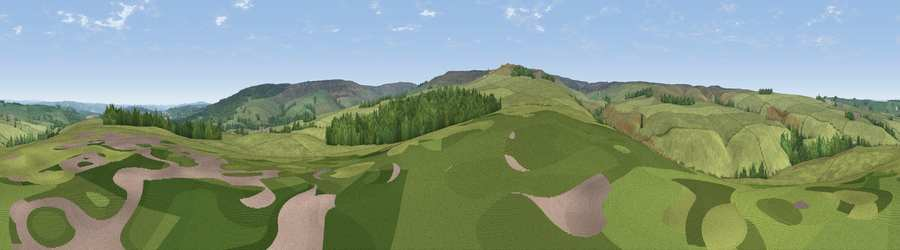

Viewpoint near Whitley Chapel
#26029 in England · top 67% of its area beats it · near Whitley Chapel · access?Where it is
The exact computed spot (NY 90625 56075). Click the marker for map links.
Public access: no public right of way or access land is recorded at this exact spot — it may be on private land. Computed from Natural England's CRoW access layer and OpenStreetMap rights of way — not the legal definitive map. Always verify locally.
The view, rendered

A 360° render of this exact spot computed from the terrain model, tree cover and land cover — summer colours, afternoon light, calibrated against photographs of famous viewpoints. Real trees, hedges and buildings will differ in detail.
The panorama
Grey silhouette: terrain skyline in each direction (720 bearings, Earth curvature and refraction included). Dashed green: skyline with trees (+15 m) and buildings (+8 m) as obstacles. Blue strip: how far the ground is visible on each bearing.
Where the view opens
Wedge length = distance to the farthest visible ground on that bearing (vegetation-aware). Rings at 10, 25 and 50 km.
What fills the view
87% grassland · 12% woodland · 1% cropland
Angular shares of the visible panorama (visual magnitude), not map area. Landscape diversity 0.19 (0–1 Shannon).
Key numbers
More beautiful places nearby
The staircase of upgrades: each row has a higher view potential than everything closer. Driving times are estimates from straight-line distance, calibrated against real road routing — check an actual route before setting out.
| Place | Direction | Drive | Score |
|---|---|---|---|
| Viewpoint near Whitley Chapel | S · 3 km | ~8 min | 68.2 |
| Watson's Pike | SSW · 4 km | ~8 min | 68.3 |
| Viewpoint near Slaley | E · 10 km | ~19 min | 69.8 |
| Viewpoint near Allendale | WSW · 10 km | ~20 min | 70.0 |
| Viewpoint near Rookhope | SSE · 11 km | ~22 min | 70.4 |
| Viewpoint near Fourstones | N · 12 km | ~22 min | 71.4 |
| Viewpoint near Allenheads | SW · 14 km | ~26 min | 74.6 |
| Pontop Pike | E · 25 km | ~40 min | 77.8 |
54.89931, -2.14771 · source: screening · position refined by local search. Computed location — check access rights before visiting.